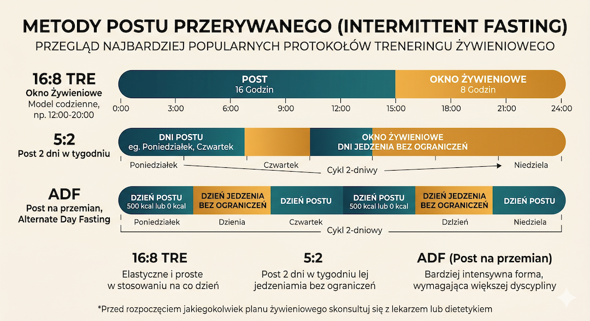
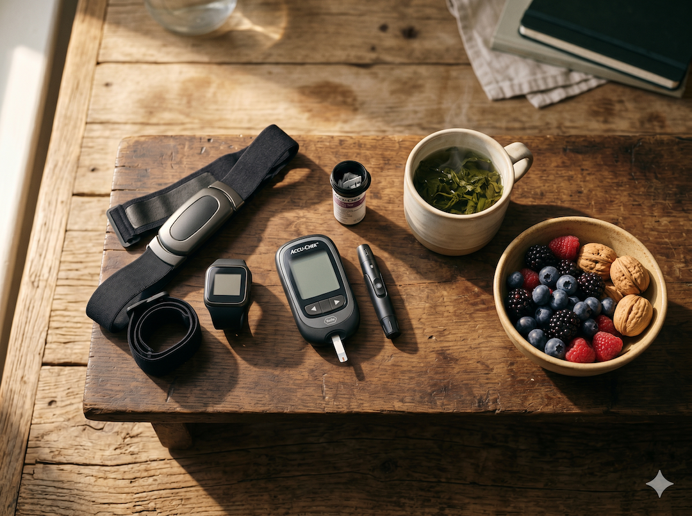
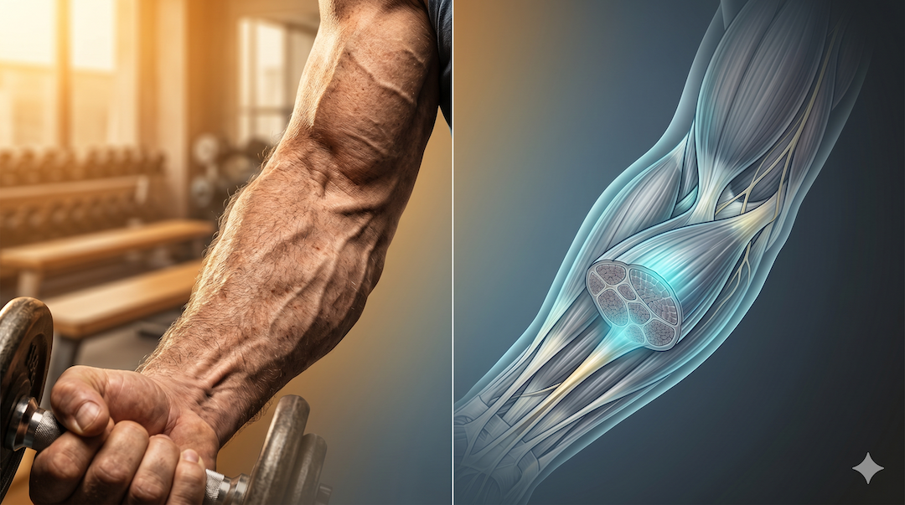
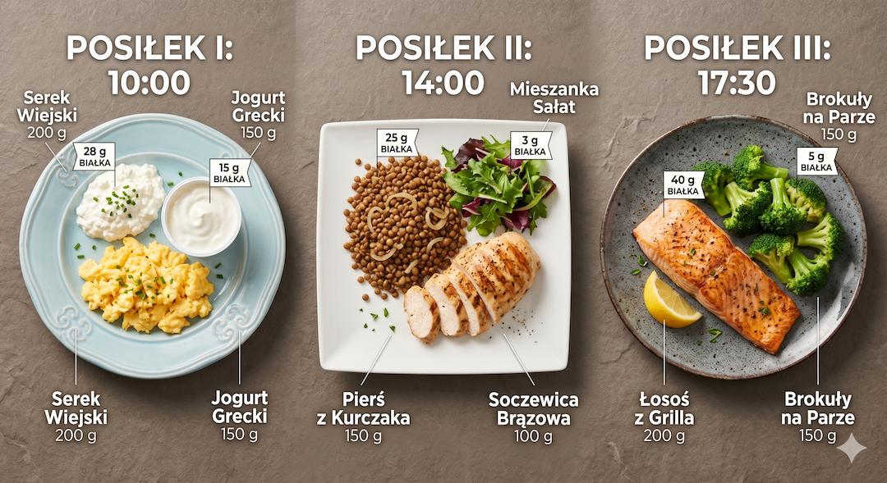
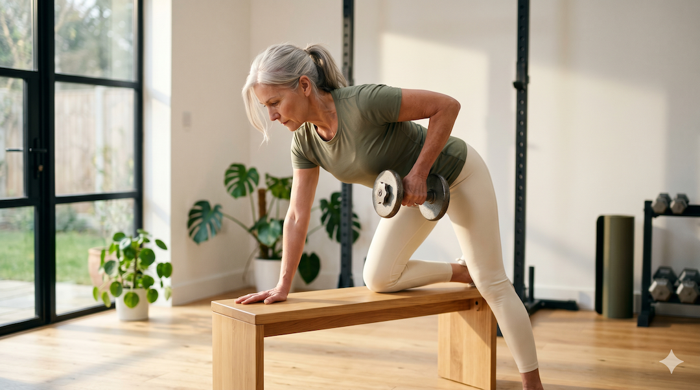
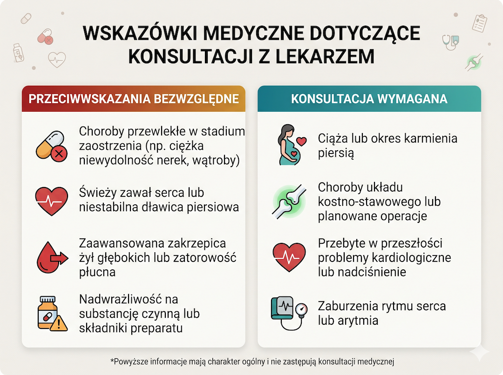
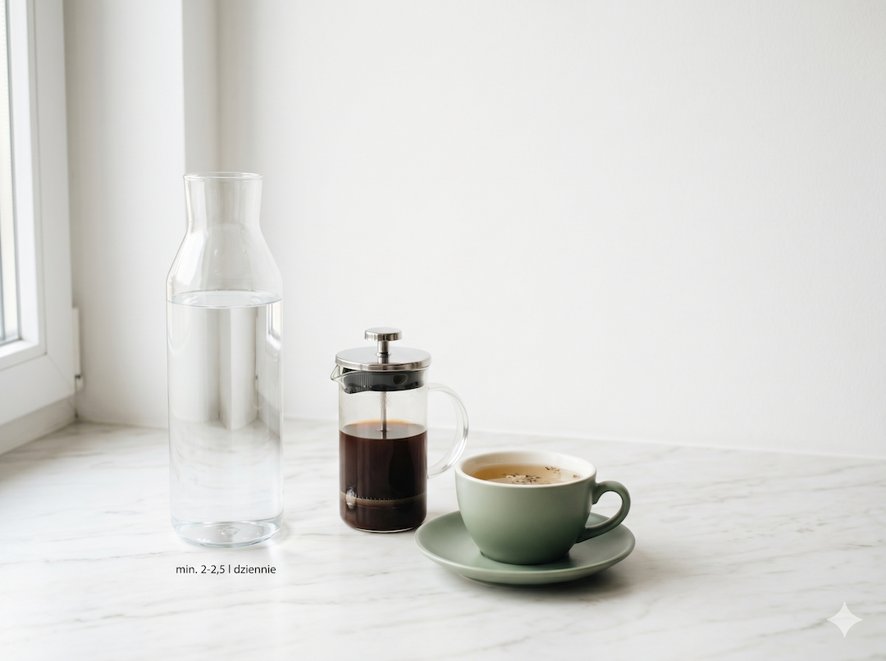

Post przerywany (intermittent fasting) to obecnie jeden z najpopularniejszych sposobów na poprawę zdrowia. Ale czy to, co zachwalają trzydziestolatkowie, sprawdzi się równie dobrze u osób po pięćdziesiątce? Gdy metabolizm zwalnia, a utrzymanie mięśni staje się wyzwaniem, strategia „okna żywieniowego” wymaga mądrego podejścia. Najnowsze badania z lat 2023–2025 pokazują, że choć post pomaga w metabolizmie, to bez odpowiedniej dawki białka i ruchu może osłabić nasze ciało. Sprawdźmy, jak z tej metody korzystać bezpiecznie.
Szybka odpowiedź
Post przerywany po 50-tce może poprawić glikemię i kontrolę apetytu, ale źle ustawiony zwiększa ryzyko utraty mięśni. Najbezpieczniej zacząć od okna 12/12 albo 14/10 i utrzymać białko 1,4-1,8 g/kg. Jeśli spada siła lub regeneracja przez 2-3 tygodnie, skróć post i zwiększ podaż energii.
Kluczowe wnioski
Kluczowe wnioski
- Badania z 2024 roku potwierdzają: post przerywany skutecznie spala tłuszcz u osób po 40-tce, nie osłabiając przy tym mięśni — jeśli dbasz o białko.
- Po 50-tce masa mięśniowa naturalnie ucieka (ok. 0,8% rocznie). Zbyt agresywny post bez treningu może ten proces niestety przyspieszyć.
- Zalecana dawka białka to 1,0–1,2 g na każdy kilogram masy ciała. W poście przerywanym da się to osiągnąć, ale posiłki trzeba zaplanować.
- Najbezpieczniejszy dla dojrzałych jest wariant 16:8. Bardziej ekstremalne głodówki mogą być zbyt obciążające dla organizmu.
Na czym polega post przerywany?
Na czym polega post przerywany. Bezpieczniej wchodzić w zmiany etapami, bo wtedy łatwiej utrzymać plan i uniknąć przeciążeń już na początku. Spokojne wdrożenie zwykle daje trwalszy efekt, bo organizm ma czas na adaptację i mniej sygnałów przeciążenia.

Post przerywany (IF) to nie dieta cud, a specyficzny rytm jedzenia. Dzielimy dobę (lub tydzień) na czas, w którym jemy, oraz czas, w którym organizm odpoczywa od kalorii. Najpopularniejsze metody to: 16:8 (jesz przez 8 godzin, pościsz przez 16), 5:2 (5 dni jesz normalnie, 2 dni jesz bardzo mało) oraz ADF (post co drugi dzień).
Dla osób po 50-tce najrozsądniejszym wyborem jest model 16:8. Wielkie podsumowanie badań opublikowane w 2025 roku w BMJ potwierdziło, że ten sposób jedzenia pomaga zrzucić wagę i poprawić zdrowie tak samo skutecznie, jak tradycyjne diety, ale dla wielu jest po prostu łatwiejszy do utrzymania. W praktyce najlepiej łączyć go z prostymi zasadami z artykułu o codziennej diecie po 50-tce.
Pamiętajmy jednak, że większość badań nad postem trwa kilka miesięcy. Choć wyniki są obiecujące, to przy wprowadzaniu takich zmian na stałe warto słuchać sygnałów płynących z własnego ciała.
- Metoda 16:8 — najprostsza i najbezpieczniejsza po 50-tce.
- Metoda 5:2 — wymaga dużej dyscypliny i pilnowania białka w „dni postne”.
- ADF (co drugi dzień) — może być zbyt obciążający i grozi niedoborami składników odżywczych.
Dlaczego warto spróbować? (Według nauki)?
Dlaczego warto spróbować? (Według nauki) To właśnie w tym miejscu najłatwiej zobaczyć różnicę między modą a radami, które mają sens. Najlepiej zwiększać zakres stopniowo, dzięki czemu postęp jest stabilny i łatwiejszy do utrzymania miesiąc po miesiącu. O wyniku decyduje regularna realizacja planu i drobne korekty wykonywane na podstawie obserwacji, nie domysłów.

Najnowsze dane z 2025 roku pokazują, że post przerywany realnie obniża poziom złego cholesterolu i trójglicerydów oraz pomaga ustabilizować poziom cukru. To kluczowe po 50-tce, gdy rośnie ryzyko cukrzycy i problemów z sercem, a dodatkowo warto monitorować markery z artykułu o ApoB i ApoA.
Ciekawe wnioski przyniosły też badania z 2024 roku skupione na osobach dojrzałych. Pokazały one, że stosując post, można schudnąć średnio o 2 kg w kilka miesięcy, spalając głównie tkankę tłuszczową, a nie mięśnie. Warunkiem jest jednak, by nie zapominać o aktywności fizycznej.
Pojawiają się też pierwsze dowody na to, że taki tryb życia może wspierać naszą pamięć i jasność umysłu. Choć naukowcy wciąż to badają, u osób w wieku 55–70 lat zauważono poprawę koncentracji po wprowadzeniu postu.
- Skuteczniejsza walka z otyłością brzuszną.
- Lepsze wyniki badań: niższy cukier i zdrowszy profil lipidowy.
- Potencjalnie sprawniejszy mózg i lepsza pamięć na dłużej.
- Brak konieczności liczenia każdej kalorii — wystarczy pilnować czasu.
Sarkopenia: kiedy post może zaszkodzić?
Sarkopenia: kiedy post może zaszkodzić. Najlepiej działa stały rytm tygodnia oraz regularne notowanie reakcji organizmu po każdym etapie planu. Dzięki temu temat "Sarkopenia: kiedy post może zaszkodzić?" przekłada się na praktyczne decyzje, które można wdrożyć od razu, bez zbędnej teorii i bez przeciążania planu.

Sarkopenia to brzmiąca tajemniczo, ale bardzo powszechna przypadłość — to naturalna utrata siły i masy mięśni po 50. roku życia. Z każdym rokiem tracimy około 1% mięśni, a siła znika jeszcze szybciej. Jeśli wprowadzimy post zbyt drastycznie, możemy ten proces nieświadomie przyspieszyć.
Dzieje się tak z trzech powodów: jemy za mało białka w ciągu dnia, nasze mięśnie gorzej reagują na posiłki niż za młodu (tzw. oporność anaboliczna) lub po prostu za mało się ruszamy. Wtedy organizm, zamiast spalać tłuszcz, zaczyna „palić” własne mięśnie, by zdobyć energię.
Ale jest na to sposób. Badania z 2024 roku potwierdzają: jeśli połączysz okno żywieniowe z prostymi ćwiczeniami (np. z gumami oporowymi lub hantlami), spalisz tłuszcz, zachowując sprawność i siłę. To dobrze łączy się z planem opisanym w tekście o treningu 3x30 dla 50+.
- Mięśnie to Twoja polisa na zdrowie — po 50-tce musisz o nie dbać podwójnie.
- Im krótsze okno jedzenia, tym trudniej dostarczyć budulca dla ciała.
- Sam post to za mało — bez ruchu mięśnie będą słabnąć.
- Unikaj głodówek typu „jeden posiłek dziennie” (OMAD) — to prosta droga do utraty sił.
Ile białka potrzebujesz w „oknie”?
Ile białka potrzebujesz w „oknie”. Najlepiej sprawdza się stała rutyna: prosty plan, mierzalny cel i kontrola, czy kierunek dalej ma sens. Praktyczna skuteczność rośnie, gdy skupiasz się na powtarzalności działań zamiast szukania szybkich skrótów.

Eksperci od żywienia osób dojrzałych (ESPEN) zalecają spożywanie od 1,0 do 1,2 grama białka na każdy kilogram masy ciała. Jeśli ważysz 75 kg, potrzebujesz ok. 80–90 g białka dziennie. Musisz to zmieścić w tych kilku godzinach, kiedy jesz.
Najlepiej rozłożyć białko na 2–3 posiłki. Zamiast zjadać ogromny stek raz dziennie, zjedz jajka na śniadanie, kurczaka lub rybę na obiad i twaróg na kolację. Dzięki temu Twój organizm będzie miał stały dopływ paliwa do budowy mięśni przez cały czas trwania okna żywieniowego. Jeśli chcesz policzyć to dokładniej, zobacz też przewodnik o białku i kreatynie po 50-tce.
- Celuj w min. 1 gram białka na kilogram wagi (np. 80 g białka dla osoby 80 kg).
- Jedz białko w każdym posiłku (ok. 25–30 g na raz).
- Stawiaj na jakość: ryby, chude mięso, rośliny strączkowe, jaja i nabiał.
- Jeśli masz problem z ilością jedzenia, rozważ odżywkę białkową jako uzupełnienie.
Ruch to podstawa sukcesu?
Ruch to podstawa sukcesu To właśnie w tym miejscu najłatwiej zobaczyć różnicę między modą a radami, które mają sens. Tu liczy się realizm: plan powinien być wykonalny w zwykłym tygodniu, a nie tylko w idealnych warunkach. Tu liczy się realizm: plan powinien być wykonalny w zwykłym tygodniu, a nie tylko w idealnych warunkach.

Badania z 2025 roku potwierdzają: post bez ruchu to błąd. Aby chronić mięśnie, potrzebujesz treningu oporowego (siłowego) przynajmniej dwa razy w tygodniu. Nie muszą to być ciężary w siłowni — wystarczą ćwiczenia z własnym ciałem, butelkami wody czy gumami w domu.
Oprócz ćwiczeń siłowych dbaj o codzienne spacery. Pół godziny szybkiego marszu robi ogromną różnicę dla Twojego serca i metabolizmu. Jeśli planujesz intensywny wysiłek, najlepiej zrób go po pierwszym posiłku — będziesz mieć więcej energii i mniejsze ryzyko kontuzji. Dla wydolności i bezpieczeństwa warto też przeczytać tekst o VO2 max po 50-tce.
- Trening siłowy 2 razy w tygodniu to absolutne minimum.
- Spacery: 30–45 minut każdego dnia.
- Słuchaj organizmu: jeśli na czczo kręci Ci się w głowie, ćwicz po jedzeniu.
- Brak ruchu przy poście to prosta droga do osłabienia organizmu.
Kiedy zachować szczególną ostrożność?
Kiedy zachować szczególną ostrożność W praktyce to ten detal najczęściej przesądza o bezpieczeństwie i trwałości efektów. Najbezpieczniej oprzeć decyzje na objawach, pomiarach i reakcji organizmu zamiast na pojedynczych opiniach. Najbezpieczniej oprzeć decyzje na objawach, pomiarach i reakcji organizmu zamiast na pojedynczych opiniach.

Post przerywany nie jest dla każdego. Jeśli chorujesz na cukrzycę (zwłaszcza leczoną insuliną), masz problemy z nerkami, cierpisz na osteoporozę lub masz niską wagę — bezwzględnie skonsultuj się z lekarzem przed jakąkolwiek zmianą. Szczególnie ostrożnie podchodź do postu, jeśli jednocześnie chcesz redukować masę ciała i masz niski poziom siły.
Zwracaj uwagę na sygnały ostrzegawcze. Jeśli podczas postu czujesz silne kołatanie serca, miewasz mroczki przed oczami, drżą Ci ręce lub nagle słabniesz — natychmiast przerwij głodówkę i napij się czegoś z cukrem. To mogą być objawy hipoglikemii, która po 50-tce bywa niebezpieczna.
- Cukrzyca i leki na nadciśnienie wymagają nadzoru lekarza przy IF.
- BMI poniżej 22? Post może nie być dla Ciebie dobrym rozwiązaniem.
- Mroczki przed oczami i omdlenia to sygnał do natychmiastowego stopu.
- Choroby nerek wymagają precyzyjnego ustawienia białka przez specjalistę.
Jak zacząć mądrze i bez stresu?
Jak zacząć mądrze i bez stresu. W praktyce przewagę daje prosty system: realizujesz plan, zapisujesz wynik i korygujesz tylko jeden element naraz. Najwięcej korzyści przynosi konsekwencja oraz spokojna kontrola postępu zamiast chaotycznych zmian co kilka dni.

Nie rzucaj się od razu na głęboką wodę. Zacznij od wariantu 14:10 (pościsz 14 godzin, np. od 19:00 do 9:00 rano). Daj swojemu ciału dwa tygodnie na przyzwyczajenie się do braku podjadania przed snem. Dopiero potem, jeśli czujesz się dobrze, przesuń śniadanie o kolejną godzinę lub dwie.
W pierwszym miesiącu nie martw się liczeniem kalorii. Skup się na tym, by Twoje posiłki były wartościowe: dużo warzyw, dobre tłuszcze i solidna porcja białka. Jeśli będziesz czuć się sytym w oknie jedzenia, post przyjdzie Ci naturalnie i bez wysiłku. Pamiętaj też o płynach — pomoże Ci w tym poradnik o nawodnieniu na treningu po 50-tce.
- Krok 1: Wariant 14:10 przez pierwsze dwa tygodnie.
- Krok 2: Pilnuj jakości jedzenia (warzywa + białko).
- Krok 3: Pij dużo wody w czasie postu (może być z cytryną).
- Krok 4: Po miesiącu oceń swoją wagę, energię i wyniki badań.
Najczęściej zadawane pytania
Najczęściej zadawane pytania
Czy post przerywany jest bezpieczny dla osób po 50-tce?
Tak, dla większości zdrowych osób jest to bezpieczna i skuteczna metoda poprawy metabolizmu. Jednak przy chorobach przewlekłych (cukrzyca, nadciśnienie, choroby nerek) konieczna jest konsultacja z lekarzem, ponieważ zmiana rytmu jedzenia może wymagać dostosowania dawek leków.
Czy od postu nie stracę mięśni?
Ryzyko istnieje, jeśli będziesz jeść zbyt mało białka lub zrezygnujesz z ruchu. Badania pokazują, że przy spożywaniu ok. 1,2 g białka na kg masy ciała i regularnym (choćby lekkim) treningu siłowym, organizm spala tłuszcz, chroniąc jednocześnie masę mięśniową.
Jaki wariant postu jest najlepszy na start?
Najlepiej zacząć od 14:10 (np. jesz między 8:00 a 18:00). Gdy poczujesz się z tym swobodnie, możesz przejść do najpopularniejszego modelu 16:8. Unikaj ekstremalnych metod typu jeden posiłek dziennie, bo po 50-tce bardzo trudno jest wtedy dostarczyć organizmowi wszystkich niezbędnych składników na raz.
Co mogę pić podczas postu?
Wszystko, co nie ma kalorii: wodę (gazowaną i niegazowaną), czarną kawę bez cukru i mleka, herbaty ziołowe i owocowe (bez cukru). Pamiętaj, że nawet odrobina śmietanki w kawie przerywa proces postu i hamuje korzyści metaboliczne.
Czy mogę ćwiczyć na czczo?
Lekka aktywność, jak spacer czy spokojna joga, jest na czczo bardzo wskazana. Jednak intensywniejsze ćwiczenia siłowe lepiej zaplanować w trakcie okna żywieniowego lub tuż po jego otwarciu. Dzięki temu unikniesz nadmiernego zmęczenia i dasz mięśniom budulec do regeneracji.
Źródła
Źródła po 50-tce warto wdrażać krok po kroku i od razu łączyć teorię z praktyką. Dzięki temu łatwiej utrzymać regularność, poprawić bezpieczeństwo działań i szybciej zauważyć trwałe efekty zdrowotne w codziennym życiu.
- Yao K. et al. – IF vs. regular diet w grupie 40+, meta-analiza 9 RCT, J Nutr Health Aging 2024
- BMJ 2025 – Sieciowa meta-analiza 99 RCT (n=6582): strategie IF a masa ciała i markery kardiometaboliczne
- Nutrition Journal 2025 – Systematic review i meta-analiza IF vs. CER (15 RCT, n=758): lipidy, glukoza, skład ciała
- ESPEN Expert Group – Protein intake and exercise for optimal muscle function with aging, PMC 2014
- Strategies to Prevent Sarcopenia: Role of Protein Intake and Exercise – PMC / Nutrients 2022
- ScienceDirect 2025 – Resistance training fasted vs. fed state: systematic review and meta-analysis
- Ioannidou E. et al. – Protein, leucine, omega-3 and vitamin D in sarcopenia prevention – PMC / Nutrients 2018
- AARP Health – Intermittent Fasting: Is It Safe If You're 50 or older? (2025, z komentarzem Satchidananda Panda, Salk Institute)
Uwaga: Artykuł ma charakter informacyjny i edukacyjny. Nie zastępuje konsultacji lekarskiej, diagnozy ani leczenia.
Jeśli ograniczasz okno jedzenia, tym bardziej warto chronić mięśnie: zobacz trening siłowy jako eliksir młodości po 50-tce.